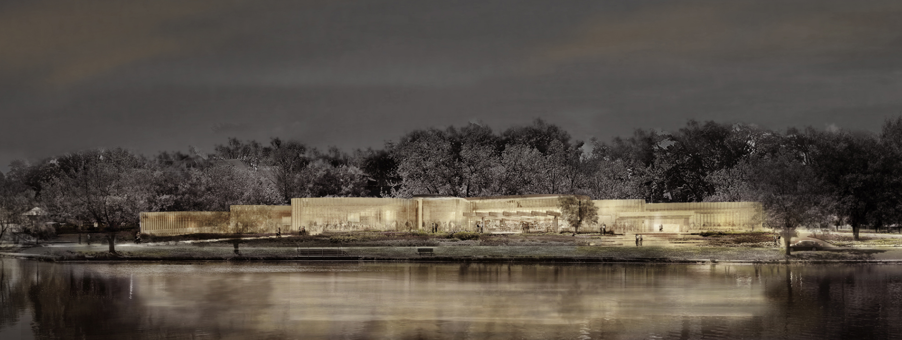

Project Name: Tom Patterson Theatre
Location: Stratford, Ontario
Size: 75,000 SQ.FT. | 7,000 SQ.M
Partners: Hariri Pontarini & EllisDon
Project Name: Tom Patterson Theatre
Location: Stratford, Ontario
Size: 75,000 SQ.FT. | 7,000 SQ.M
Partners: Hariri Pontarini & EllisDon
The new Tom Patterson Theatre is designed to stand as an attractor, and is positioned to draw people to the City of Stratford, to the Festival, along the banks of the Avon River, and through the gardens.
From the outside, the building will glitter like a seductive jewel, a magnetic prelude to the delight and joy of the performances within. An undulating, shimmering bronze veil wraps the theatre in petals of warmth and light. Once inside, the curvilinear design creates quiet folds—eddies where one can wait for a loved one, engage in quiet conversation, or savour a contemplative moment sheltered from the current of activity. The design creates an architecture presenting a unified whole, while at the same time enabling each programmatic element—the lobby, education spaces, and Forum—to have distinct experiences nestled within.
Project Name: University of Windsor - Science Research and Innovation Facility
Location: Windsor, Ontario
Size: 46,000 SQ.FT. | 4,275 SQ.M
Partners: Hariri Pontarini & Amico Design Build
Project Name: Owen Sound Medical Building
Location: Owen Sound, Ontario
Size: 77,500 SQ.FT. | 7,235 SQ.M
Partners: Architecttura Inc & Amico Design Build
Project Name: Amico Design Build
Location: Windsor, Ontario
Size: 13,700 SQ.FT. | 1,275 SQ.M
Partners: Architecttura Inc & Amico Design Build
Project Name: Essex District High School
Location: Essex, Ontario
Size: 90,000 SQ.FT. | 8,360 SQ.M
Partners: Architecttura Inc & Wincon

Project Name: Burnumthorp
Location: Burnumthrop , Ontario
Size: 90,000 SQ.FT. | 8,360 SQ.M
Partners: ZAS Architects & PCL

Project Name: Guelph Infiniti
Location: Guelph, Ontario
Size: 13,700 SQ.FT. | 1,275 SQ.M
Partners: A.D.A & STC Construction Group